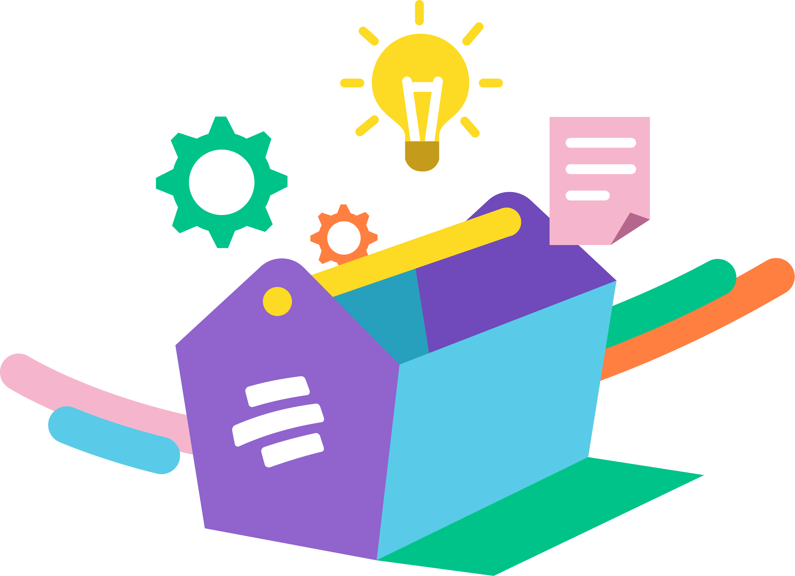

Herramientas de accesibilidad
Aquí encontrarás herramientas pensadas para distintos roles, contextos de uso y tipos de recurso, que te ayudarán a comprender conceptos, aplicar metodologías y fortalecer procesos de trabajo individual o en equipo. Explora, filtra y selecciona la herramienta que mejor se adapte a quién eres, para qué la necesitas y cómo deseas utilizarla.
